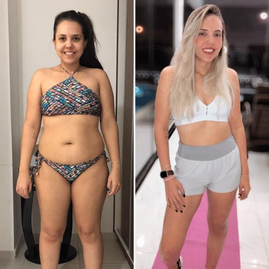

Veja o Resultado dos Chás Bariátricos na Vida da Mariana
Com dificuldades para emagrecer e muita ansiedade, Mariana incluiu os chás bariátricos em sua rotina noturna. Em apenas três semanas, perdeu 9 kg, melhorando sua autoestima e vida.
